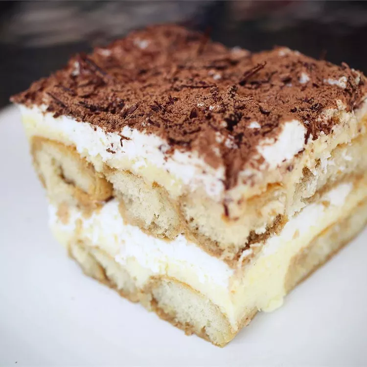

Home
Tiramisu

Description:
Tiramisu, with its irresistible coffee flavor and lightly sweetened mascarpone, will never go out of style. This tiramisu recipe is a no-bake dessert that's sure to impress even the pickiest of eaters.
Tiramisu is a coffee-flavored dessert that features layers of homemade whipped cream, an egg yolk-enriched mascarpone filling, and coffee-soaked ladyfingers.
Tiramisu has Italian origins. The famous Italian restaurateur Ado Campeol is credited with its invention in the 1970s. In fact, he was widely known as "the father of tiramisu". The word "tiramisu" translates to "pick-me-up".
Ingredients:
(12 Servings)
- Egg Yolks: 6 large
- White Sugar: 3/4 cup
- Milk: 2/3 cup
- Heavy Cream: 1 and 1/4 cups
- Vanilla Extract: 1/2 teaspoon
- Mascarpone Cheese: 1 pound at room temperature
- Strong Brewed Coffee: 1/4 cup at room temperature
- Rum: 2 tablespoons
- Ladyfinger Cookies: 2 packages / 3 ounces
- Unsweetened Cocoa Powder: 1 tablespoon
Steps:
- Gather the ingredients.
- Whisk egg yolks and sugar together in a medium saucepan until well blended.
- Whisk in milk and cook over medium heat, stirring constantly, until mixture comes to a boil.
- Boil gently for 1 minute, then remove from the heat and allow to cool slightly.
- Cover tightly and chill in the refrigerator for 1 hour.
- Beat cream and vanilla in a medium bowl with an electric mixer until stiff peaks form.
- Remove egg yolk mixture from the refrigerator; add mascarpone cheese and whisk until smooth.
- Combine coffee and rum in a small bowl. Split ladyfingers in half lengthwise and drizzle with the coffee mixture. Arrange 1/2 of the soaked ladyfingers in the bottom of a 7x11-inch dish.
- Spread 1/2 of the mascarpone mixture over the ladyfingers, then spread 1/2 of the whipped cream over top. Repeat layers once more.
- Sprinkle cocoa powder over top.
- Cover and refrigerate until set, 4 to 6 hours.
- ENJOY!